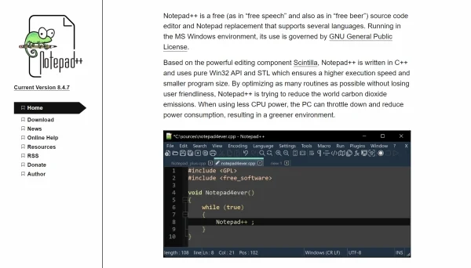

Aplicaciones para poder utilizar html (editores de texto)
Si estás desarrollando un sitio web, te habrás dado cuenta de que un bloc de notas sirve muy bien para aprender a escribir el código HTML. Aun así, no es la herramienta más dinámica para agilizar tu proyecto, porque tienes que prestar mucha atención y tiempo a los errores de sintaxis para corregirlos.

¿Qué es un editor HTML?
Es un software informático que facilita la creación y edición de páginas web en lenguaje de marcado de hipertexto (HTML). Dado que el código de fuente está basado en texto se puede modificar directamente al ir escribiendo los comandos. Este tipo de editores tienen funciones especiales para desarrollar la estructura del sitio web.Entre esas funciones están detección de etiquetas, la identificación de errores de sintaxis en la escritura del código, autocompletar texto y la compatibilidad con otros lenguajes. Una vez que hayas construido la estructura de la página web con el HTML, puedes pasar al lenguaje CSS para trabajar el diseño y darle interacción con JavaScript.
Tipos de editores HTML
Sustancialmente los editores HTML se dividen en dos categorías:
Editor basado en texto
Este crea las páginas usando solo el lenguaje HTML, que incluye un grupo de etiquetas que señalan elementos determinados dentro de la estructura web. Es el preferido de los desarrolladores porque da mayor precisión y calidad a la página, además de que es más fácil arreglar los errores en el código. Si ya has aprendido el lenguaje de marcado de hipertexto te será sencillo emplear este editor.

Editor WYSIWYG
WYSIWYG es el acrónimo de what you see is what you get, que en español se traduce como «lo que ves es lo que obtienes». Estos editores también son conocidos como editores en modo diseño, donde solo arrastras los elementos que quieres incluir, sin necesidad de conocer el lenguaje HTML. Suele ser muy rápido; sin embargo, es difícil corregir errores en la página.

A continuacion mencionare 3 de los mas conocidos :
1. Visual Studio Code
Considerado como uno de los preferidos de los desarrolladores web, Visual Studio Code es un editor que maneja múltiples lenguajes de programación, entre ellos el HTML, Python, CSS y JavaScript. Está disponible para sistemas operativos de Windows, Linux y macOS.
Entre sus características más destacables está su función IntelliSense que resalta la sintaxis del código y lo autocompleta; y su función de depuración que ayuda a identificar fallos de manera automática. Además es compatible con el sistema Git para el control de versiones.
2. Atom
Este es un editor de código abierto creado por Github; también es multiplataforma porque trabaja con los sistemas operativos y lenguajes más populares. Cuenta con autocompletado inteligente, una interfaz de múltiples paneles para editar y comparar código, y un administrador para instalar paquetes.
Te ofrece una vista previa del proyecto que escribes y una de sus grandes ventajas es que puedes editar el código de una página web en colaboración con otros desarrolladores web, en tiempo real.
3. Notepad++
Lanzado en 2003, es un editor de código abierto que soporta más de 70 lenguajes de programación, entre ellos el HTML. Anteriormente solo estaba disponible para sistemas Windows, pero ya se puede trabajar en Linux con la implementación de Wine.
Su interfaz es sencilla y fácil de usar, incluye una serie de funciones avanzadas como autocompletado del código, resaltado de la sintaxis, división de la pantalla para abrir y trabajar diferentes archivos al mismo tiempo. Además, es compatible con múltiples extensiones para aumentar su rendimiento.
